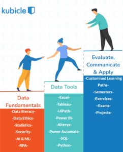
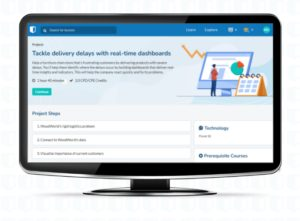
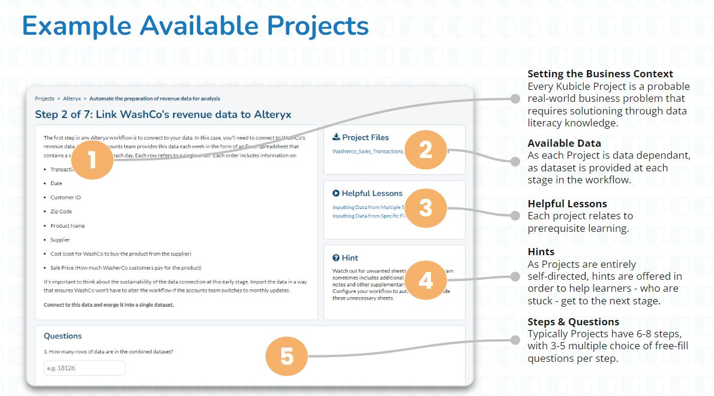

Data Citizenship
The journey towards data citizenship is one that involves a material investment in personal upskilling. In our own experience, we observe that the average learner can take anywhere between 3 to 6 months, with a minimal investment of 2 hours per week, in order to learn the fundamentals of a new technical skill or software. While this time investment is highly associated to the complexity and desired skill level attainment of the technology in question, it’s suffice to say: learning takes time – and time is something we have less of in our increasingly busy lives.
In Kubicle we spend a lot of time thinking about how to deliver effective training whilst also being hyper-aware of learner time. Our research shows that if you had a desire to reach an intermediate level of expertise in Power BI, you could do so using Kubicle in up to 5 times the time as other learning applications. Important to mention, the learning quality or the learners finishing competency level is not what’s jeopardized in the achievement of this outcome.
Additional to ‘time’, in designing data literacy courses and career specific learning paths, our library framework considers 3 main learning pillars.
The Kubicle Framework
Data Fundamentals:
A large part of data citizenship is understanding what technologies and capabilities might be used, or investigated further, to solve recognized business challenges. We don’t advocate that every employee knows how to write python scripts and train ML models, but we do think it’s of benefit for certain individuals, outside of highly technical roles, to understand the k

ey principles and standard use-cases of it. Automation, for example, can transform marketing teams and the way they interact with their customers but a marketing manager won’t be able to build a management business case for their department to adopt this technology if they never knew it existed! Data and digital technologies are disrupting Finance, Consulting, Leadership, Sales, Marketing, ….. To be in the race, you have to, well, be in the race.
Data Tools:
In our experience, no two business are alike when it comes to their ‘tool stack’. Some companies invest highly in the Microsoft tooling stack (Excel, Power BI, Power Apps, etc) while others are more agile with the GSuite and Google Workplace. Some are even investing in technologies like UiPath, Alteryx, and other RPA and advanced automation tools. Putting aside the investment that goes into making some of these technologies available to a companies population, underutilization of these available technologies can both lead to competitive losses and a significant reduction in comparative workforce output (both quality and quantity). With Kubicle training our aim is to improve this RoI yield by offering training on the most popular data tools.
Evaluate, Communicate & APPLY
The 3rd pillar in our framework is the one that delivers the greatest real world returns. What is learning if you’re unable to put it into practice? How can you, as a Data Citizen, impart change if you’re not an effective storyteller or find the crafty art of influencing others a challenge?
Courses on data visualization and presentation help with the challenge of stakeholder communication, and we’re previously focused on exams, in-course exercises and example-based learning to address the challenge of application. However, we are now proud to announce the addition of projects to this suite of application based learning experiences.
What are Projects?
Kubicle projects are simulated business scenarios that test a learners capability to apply the concepts learned in a collection of Kubicle courses.

Projects are always:
- Linked to a core technology
- Are 100% self-directed and self-paced
- Require the manipulation of a dataset provided
- Qualify as CPD & CPE certified learning
- A series of steps and challenges that bring learning theory to real world scenarios

The Kubicle Projects Experience
Some Example Kubicle Projects
Excel Projects
Optimize company revenue with cost analysis
Boost productivity by optimizing compensation
Power BI Projects
Tackle delivery delays with real-time dashboards
Identify taxpayer cohorts by exploring data
Reduce an internet provider’s customer complaints
Tableau Projects
Revamp confusing dashboards with a design audit
Prevent decision paralysis with dashboard reports
Identify profitable airline routes with data visualization